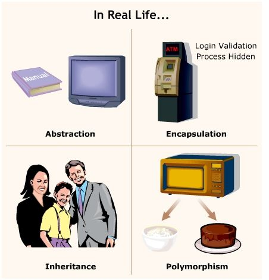

Object Oriented Programming Features
Object-Oriented Programming is a programming paradigm based on the creation of reusable “objects” that have their own properties and behavior that can be acted upon, manipulated, and bundled. These objects package related data and behaviors into representations of real-life objects. OOP is a widely used paradigm across various popular programming languages like Python, C++, and Java. Many developers use OOP because it makes your code reusable and logical, and it makes inheritance easier to implement. It follows the DRY principle, which makes programs much more efficient.

Encapsulation
Encapsulation is an object-oriented programming feature, which restricts access to methods and variables, which results in prevention of data from direct manipulation. The private attributes are denoted using underscore as the prefix i.e single _ or double __.
For Example: In our calculator class, we have used an init method which illustrates the example of the encapsulated method in our project.
In the below code, we have demonstrated that private class data can only be manipulated using class functions and not using an object.
Code Snippet:
Inheritance
The process of creating a new class by using the details of an existing class without modifying it. The new class is known as child class, and the class from which is has been derived is known as parent class or the base class.
For Example: In our project, we have implemented the inheritance feature, which has the parent class named as 'calculation_project'
and child class as 'Additioncalc','Subtractioncalc','Multiplicationcalc' and 'Divisioncalc'.
Polymorphism
The ability of object-oriented programming to use a common interface for multiple forms and data types is known as polymorphism. Polymorphism is an ability (in OOP) to use a common interface for multiple forms (data types). Suppose, we need to color a shape, there are multiple shape options (rectangle, square, circle). However, we could use the same method to color any shape. This concept is called Polymorphism.
Abstraction
Abstraction in python is defined as a process of handling complexity by hiding unnecessary information from the user. This is one of the core concepts of object-oriented programming (OOP) languages. That enables the user to implement even more complex logic on top of the provided abstraction without understanding or even thinking about all the hidden background/back-end complexity.
Real Life Examples
The real world examples for the OOP programming features are as follows :
